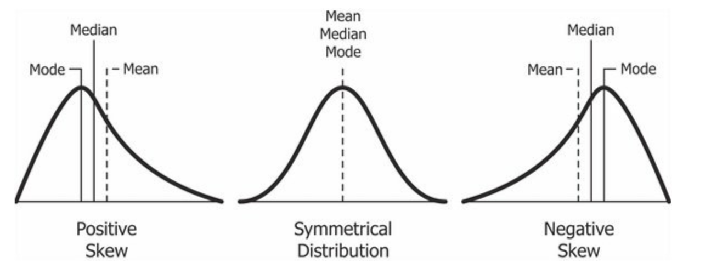

Skewness and Kurtosis: are known as the third and fourth moment of a distribution, and used to describe the 'shape' of a distribution:
Skewness: is a measure of a distribution's symmetry, and is often referred to as the 'degree of distortion' from a symmetrical bell curve.
Kurtosis: is a measure of a distribution's propensity to have extreme values, and is often referred to as the 'degree of tailedness'.
Why are these moments important?
Mean and standard deviation are typically used to describe a distribution, although using only these two values can be deceptive. Characterizing the skewness and kurtosis of a distribution provides greater insight the properties of a dataset than just the standard measures of location and dispersion.
Skewness
 Definition: a measure of a distribution's symmetry.How to interpret the results:
The distribution is highly skewed if:
Calculate using R programming
Calculate using Python
Download Jupyter Notebook File
Kurtosis
 Definition: is a measure of a distribution's propensity to have extreme values.
Definition: is a measure of a distribution's propensity to have extreme values.How to interpret the results:
Kurtosis ~ 3: Mesokurtic